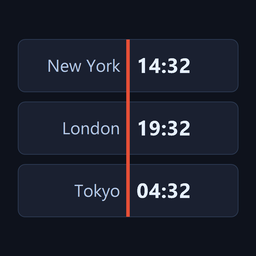

NowLine
Compare the time anywhere — now, or at any moment you pick. NowLine is a world clock and time converter for every time zone, with a live 24-hour timeline on every clock: drag one, and all your clocks move together.
The App Store version is on its way.
What it does
Plan meetings across time zones
Drag any timeline sideways and every clock moves in sync: 2 PM in New York is evening in London and the middle of the night in Tokyo. Let go and it drifts back to now; double-tap to snap back at once.
Daylight saving time, visible
Orange marks the hour that is skipped when clocks go forward; blue marks the hour that repeats when they go back. Plan near a clock change, and you see it coming.
Weather at the moment you pick
Every city shows its sky and temperature now, and the forecast for the hour you drag to. In °C or °F, or switched off in Settings.
Find any time zone, offline
Over 30,000 cities, plus countries, UTC offsets (+05:30), abbreviations (EST, CET, JST), IANA names (America/New_York) and military zones — Zulu time is UTC. The city index and the time zone rules ship inside the app, so clocks, search and the timeline need no connection.
Read from where you are
A pin marks your own city. Every clock shows how far it is from your time (−7, +2:30) and a +1 or −1 when it is already on another date. Rename any clock to a person, an office or a project.
Three themes, ten languages
Light, Dark and Midnight, or follow your system; a 12- or 24-hour clock; haptic ticks as you drag. In English, German, Spanish, French, Japanese, Korean, Portuguese, Russian, Arabic and Chinese, right to left where it belongs.
Private by default
Everything you create in NowLine — your clocks, their order, their labels — is stored on your device. There is no account to make and nothing to sign in to. To show the weather, the app sends the coordinates of the cities on your clocks to our weather server — the cities, not your position. The app does not use GPS and never asks for location permission; to name your first clock and mark your own city, it looks up your approximate location from your IP address each time it starts. Analytics can be turned off entirely in Settings → Privacy, and with it off the SDK is never started at all. The details are in the Privacy Policy.
What it costs
Up to three clocks are free. With Premium, add as many as you like: a one-time purchase, with all future updates included. No subscription, no recurring fees, no ads.
Questions
Does it work without a connection?
Yes. Clocks, search and the timeline need no connection. Without one, the only things it cannot do are look up your city from your IP address, update the weather and send analytics. The last forecast it got stays on the clock.
Does it need my location?
No. There is no location permission and no GPS. The first clock is guessed from your IP address, which is approximate and is often wrong behind a VPN — swipe it away and add the right city from search.
Can I reorder, rename or delete clocks?
Long-press and drag to reorder, double-tap a city name to rename, swipe to delete. Deleting asks for confirmation.
I paid, but my clocks are limited again
Open the Premium screen and tap Restore purchase, signed in to the same store account you bought with.
More answers — and how to reach us — on the NowLine support page.
Legal
Support · Privacy Policy · End User License Agreement · Deleting your data
NowLine is published by Tilveno, Republic of Armenia. Questions about the app go to support@tilveno.com.
Google Play and the Google Play logo are trademarks of Google LLC.